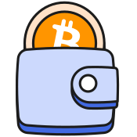

Wallet
Learn how to use the Bitcoin.com Wallet app
By Graham and 2 others3 authors138 articles
- NFT Spam Filtering
- ETH Staking
- Understanding Pending Transactions in Cryptocurrency
- USDC Staking
- Supported Cryptocurrencies and Networks in the Bitcoin.com Wallet
- How to Customize the In-App Icon in the Bitcoin.com App
- Bitcoin.com Balance: FAQ & Guide
- Invite Friends & Earn Rewards
- How-to set an NFT as your account image
- Wind down of Seasonal buy quests. Claim rewards before 25 July 2025
- What is the Bitcoin.com Price Widget?
- Push Notification Incident
- How to download and export BTC and BCH transaction histories
- SLP Tokens
- How to import funds from Badger wallet?
- Legacy and Segwit addresses
- How to use WalletConnect in the Bitcoin.com Wallet
- Support for iPhone iOS 14
- I want to remove my cloud backup
- Important Updates for Samsung S21 users re the Bitcoin.com Wallet app
- Support for iPhone iOS 15
- How to change the email address your Bitcoin.com Wallet is signed in with
- How to enable/disable News notifications
- How to import a regular wallet from Bitcoin.com Wallet v5.13 and below to Bitcoin.com Wallet 6.0+
- How to import a multisig wallet from Bitcoin.com wallet v5.13 and below Bitcoin.com Wallet v7.10+
- I'm having issues generating or claiming a Shareable Link.
- What are "Shareable Links?"
- Cordova Wallet Deprecation Notice
- How to Import MultiSig Wallets to Desktop
- Bitcoin.com Wallet app Security Features
- Setting up your wallet on multiple devices
- Merchant Wallet
- Updating your wallet
- Exporting Legacy Wallets With Passwords
- What if I send bitcoins to a wrong address?
- How to join a "Shared Wallet"
- How do I send and receive Bitcoin?
- Why is my balance hidden?
- How do I enable/disable wallet notifications?
- How to find my Extended Public Key?
- How do I delete my wallet/account?
- How do I setup my wallet on multiple devices?
- I accidentally sent BCH to my BTC wallet
- What is a transaction ID (TXID) and how to find it
- How to swap between cryptocurrencies in the Bitcoin.com Wallet
- How to sign in to the Bitcoin.com Wallet mobile app
- Pending Transactions (BCH)
- Send Multisig via Electron Cash
- Pending Transactions (BTC)
- How to send BCH (Bitcoin Cash) by email, SMS, iMessage, or through 3rd party chat and social apps
- Sending Bitcoin Cash (BCH)
- Sending Bitcoin (BTC)
- Can I send to a "bc1" address?
- How to export your old multisig Bitcoin.com Wallet (v5.13 and below)
- I can't send shareable links
- Sending cryptocurrencies
- How to Speed Up or Cancel Pending Bitcoin Transactions
- How to use the automated cloud backup service on iOS (Bitcoin.com Wallet app v 7.28 and up)
- Why is there an error when my “receive token” QR code is scanned by a third-party wallet app, and how can I fix it?
- How do I backup my Bitcoin.com Wallet?
- I want to remove my cloud backup for privacy concerns
- I lost my cloud backup password
- What does the spending password do?
- How do I secure my Bitcoin.com wallet?
- Forgot/Lost spending password
- How to restore the wallet
- Restore my wallet
- I have been warned that an address has a high level of risk and marked as a scam
- What is Ethereum?
- Unstoppable Domains guide
- ENS Domains
- Sending cryptocurrency to an Unstoppable Domain, FIO or ENS domain
- Pending Transactions on Ethereum
- Recovering your ETH wallet
- Backing up your ETH Wallet
- How to find ETH transaction?
- How to receive ETH?
- How to send ETH?
- ETH fees
- How do fees work when using Ethereum?
- XLM (Stellar Lumens) Fees
- How to Buy XLM Using the Bitcoin.com Wallet App
- How to Receive XLM Using the Bitcoin.com Wallet app
- How to Receive Stablecoins on the Stellar Network Using the Bitcoin.com Wallet App
- How to Swap XLM Using the Bitcoin.com Wallet App
- How to Earn Interest on XLM Using the Bitcoin.com Wallet
- How to Find Your XLM Transactions in the Bitcoin.com Wallet App
- How to Send XLM Using the Bitcoin.com Wallet app
- How to Sell XLM Using the Bitcoin.com Wallet App
- How to Get Started with Concordium
- How to Receive CCD (Concordium) Using the Bitcoin.com Wallet App
- How to Send CCD (Concordium) Using the Bitcoin.com Wallet App
- CCD (Concordium) Fees
- Receiving Stablecoins on the Concordium Network
- How to Find Your CCD (Concordium) Transactions in the Bitcoin.com Wallet App